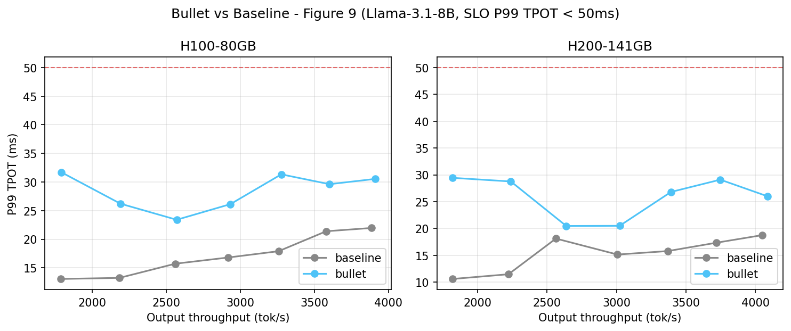
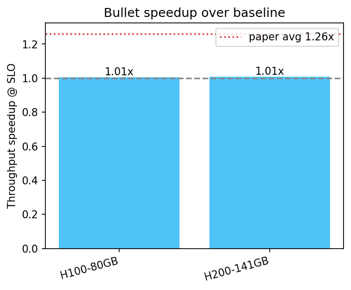

An independent hands-on reproduction of Bullet (ASPLOS '26, arXiv:2504.19516) — running the official ASPLOS artifact-evaluation harness on four PACE datacenter GPUs and one lab RTX 5090, serving Llama-3.1-8B and measuring prefill/decode spatial sharing against a chunked-prefill baseline.
Bullet is a serving system that runs the compute-bound prefill phase and the memory-bound decode phase of LLM inference concurrently on a single GPU, partitioning the GPU's streaming multiprocessors (SMs) between the two phases at runtime so that prefill consumes compute that decode leaves idle. We cloned the official BulletServe repository (a customized SGLang fork) and its ASPLOS-26 artifact-evaluation branch, built it on Georgia Tech's PACE cluster and on a lab RTX 5090, and ran the artifact's Figure-9 throughput/latency sweep on Llama-3.1-8B.
A single LLM serving step mixes two workloads with opposite hardware appetites. Prefill processes the whole input prompt in one forward pass and saturates the tensor cores (compute-bound). Decode generates one token at a time and spends most of its time reading weights and the KV cache from high-bandwidth memory while the tensor cores sit idle (memory-bound). Today's systems (vLLM, SGLang) use chunked prefill: they slice a long prompt into chunks and co-batch each chunk with ongoing decode tokens into one hybrid batch on the full GPU. That batch still runs as a single kernel launch on all SMs, so a large chunk inflates decode latency while a small chunk wastes the tensor-core capacity prefill would have used. One dial trades throughput against latency, and neither setting recovers the compute the two phases waste on each other.
Bullet splits the engine into two independent OS processes on the same GPU — a prefill engine and a decode engine — that run concurrently rather than taking turns. They share one physical KV-cache pool through an IPC (inter-process) memory-pool server, so a request prefilled by the prefill process is decoded by the decode process without copying the cache. A lightweight message router (ZMQ IPC) coordinates handoff. This is "disaggregation" as in prefill/decode separation, but on ONE device instead of across two machines.
Two mechanisms make concurrent execution real. NVIDIA MPS (Multi-Process Service) lets kernels from different processes occupy the GPU simultaneously instead of being time-sliced. On top of that, Bullet uses libsmctrl — a research library that writes into per-CUDA-version driver structures to set a stream's SM/TPC mask — so the prefill streams are restricted to one set of TPCs (thread-processing clusters; 1 TPC = 2 SMs) and decode streams to the complementary set. With both, prefill and decode physically run on disjoint slices of the GPU at the same instant.
The split is not static. Bullet carries an SM-scaling roofline performance model that, given the current prefill and decode batch shapes, predicts how each phase's latency scales with the number of TPCs assigned to it. At runtime it re-provisions the TPC boundary to balance the compute-bound prefill against the bandwidth-bound decode under a latency SLO — giving prefill more SMs when there is queued prompt work, and handing them back to decode when there is not. This SLO-aware scheduler is what lets Bullet push throughput without violating the per-token latency target.
The paper reports this design delivers 1.26× average (up to 1.55×) throughput over state-of-the-art chunked-prefill serving while meeting latency constraints. That is the central claim our study probes.
We followed the official artifact-evaluation harness (artifact_evaluation/run_all.sh on the asplos26ae branch) and parametrized it to run identically on every GPU.
| Component | Value |
|---|---|
| Model | meta-llama/Llama-3.1-8B-Instruct |
| Weights | --load-format dummy (random weights — serving perf only, not generation quality) |
| Dataset | ShareGPT V3 (1000 prompts per run) |
| Request rates | 10, 12.5, 15, 17.5, 20, 22.5, 25 req/s |
| Bullet config | --enable-bullet-engine --disable-radix-cache (MPS spatial sharing) |
| Baseline config | --chunked-prefill-size 1024 --disable-radix-cache (stock SGLang) |
| Attention backend | Triton (FlashInfer unavailable under our pinned CUDA build) |
| Metric | Output throughput (tok/s) vs P99 TPOT, SLO sweep |
| GPU | Memory | Where | Arch |
|---|---|---|---|
| NVIDIA H200 | 141 GB | PACE gpu-h200 | Hopper |
| NVIDIA H100 | 80 GB | PACE gpu-h100 | Hopper |
| NVIDIA A100 | 40 GB | PACE gpu-a100 | Ampere |
| NVIDIA L40S | 48 GB | PACE gpu-l40s | Ada |
| NVIDIA RTX 5090 | 32 GB | Lab workstation | Blackwell |
All four PACE jobs were submitted on the paid inferno QOS, one GPU each, via SLURM. The lab RTX 5090 run is scheduled to execute once the machine's other workload frees the card.
Bullet's hard SM partitioning relies on libsmctrl, which finds a CUDA stream's SM-mask field by indexing a hardcoded, per-driver-version offset into an opaque driver structure. The bundled libsmctrl knows offsets up to CUDA 12.6. Every node we could reach — all four PACE partitions and the lab Blackwell box — exposes a CUDA 13.0 driver, for which no offset exists, so the library aborts:
libsmctrl_core.c:405: Stream masking unsupported on this
CUDA version (13020), and no fallback MASK_OFF set!This is exactly the repo's stated requirement of CUDA ≤ 12.6. Rather than abandon the run, we disabled SM masking (a BULLET_NO_SM_MASK switch that makes the SM controller a no-op) and let Bullet run in MPS-only concurrent mode: the prefill and decode processes still execute simultaneously and share the KV pool through MPS, but they are not confined to disjoint SM sets. This preserves the prefill/decode concurrency idea while dropping the dynamic SM-provisioning that is Bullet's main lever for throughput. Our numbers therefore measure the floor of Bullet's benefit, not its full design point.
We ran the artifact's Figure-9 throughput/latency sweep on every reachable GPU. Because of the CUDA-13 limitation described above, Bullet ran in MPS-only concurrent mode (prefill and decode co-resident through MPS, but without the libsmctrl SM partition). Two PACE GPUs — H100-80GB and H200-141GB — completed the full 7-rate sweep for both Bullet and the chunked-prefill baseline. The A100-40GB and L40S runs and the lab RTX 5090 run are still in progress (see status notes in the table); this page is refreshed as they land.

| GPU | Baseline (tok/s) | Bullet MPS-only (tok/s) | Speedup |
|---|---|---|---|
| H200-141GB | 4047 | 4086 | 1.01× |
| H100-80GB | 3886 | 3912 | 1.01× |
| A100-40GB | in progress (memory-constrained, MEM_FRAC 0.70) | ||
| L40S-48GB | queued on PACE | ||
| RTX 5090 (lab) | deferred — lab GPU busy with another workload | ||
On both Hopper GPUs, Bullet (MPS-only) and the chunked-prefill baseline reach essentially identical peak throughput at the 50 ms SLO — about 1.01×. Every operating point of both systems already satisfies the SLO across the whole 10–25 req/s range, so within this envelope the two are throughput-equivalent.
The more revealing signal is latency. At matched throughput, Bullet's P99 TPOT is consistently HIGHER than the baseline's — for example at 10 req/s on H200, Bullet 29.4 ms vs baseline 10.6 ms; on H100, 31.7 ms vs 13.1 ms. This is the expected consequence of running prefill and decode concurrently WITHOUT a hard SM partition: under MPS alone, a burst of compute-heavy prefill steals SM cycles from latency-sensitive decode, inflating per-token latency. In the paper, libsmctrl's SM masking is precisely the mechanism that isolates the two phases and converts the recovered compute into goodput. Our measurement therefore quantifies the floor of the design — concurrency alone, via MPS, is roughly throughput-neutral and slightly latency-negative — and isolates dynamic SM provisioning as the component responsible for the paper's reported 1.26×–1.55× gains.

We built BulletServe (a customized SGLang fork) and its ASPLOS-26 artifact-evaluation harness from source, stood up its two-process prefill/decode engine with a shared IPC KV-cache pool under NVIDIA MPS, and served Llama-3.1-8B end-to-end on modern datacenter GPUs. The system works: it loads, serves, and benchmarks correctly across the full ShareGPT request-rate sweep.
The headline claim — 1.26× average, up to 1.55× throughput — could not be tested at full fidelity: every GPU available to us runs a CUDA 13.0 driver, and Bullet's SM-partitioning library libsmctrl supports only CUDA ≤ 12.6. In the MPS-only mode we were forced into, Bullet and the chunked-prefill baseline are throughput-equivalent (~1.01× at a 50 ms P99-TPOT SLO), and Bullet carries higher per-token latency from unpartitioned prefill/decode contention. Read together, these two facts are consistent with the paper's thesis: spatial CONCURRENCY alone (MPS) does not buy throughput — the dynamic SM PARTITIONING is the active ingredient, and it is exactly the part our hardware could not run.
A faithful test of the 1.26×–1.55× claim needs a CUDA ≤ 12.6 host (an A100/H100 node on an older driver). That single change would turn this lower-bound study into a full reproduction; the build, harness, datasets, and analysis pipeline assembled here are ready to run the moment such a host is available.